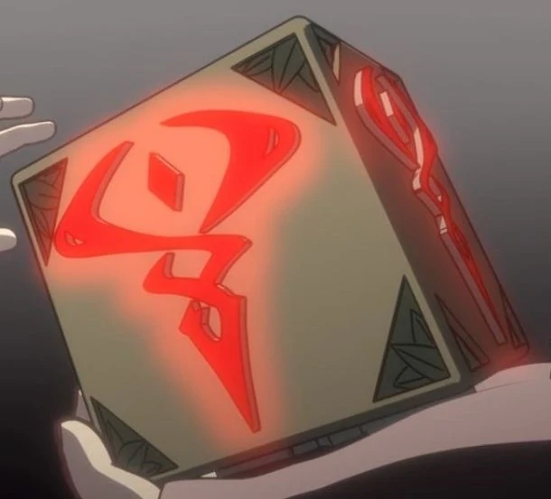

Mrok
Opis
Czarna magia - nie łączy się bezpośrednio z Pierwotnymi Źródłami. Zamiast tego wykorzystuje esencję z samych magicznych stworzeń - użytkownicy czarnej magii wykorzystują rośliny oraz części ciała magicznych stworzeń do rzucania zaklęć. Dlatego też generalnie smoki i elfy są zdecydowanymi przeciwnikami tych praktyk. Łatwość i moc mrocznej magii sprawiły, że ludzie polowali i kłusowali magiczne stworzenia, by zebrać ich magiczną energię. Przerażone tą praktyką elfy i smoki podzieliły kontynent i wypędziły wszystkich ludzi na zachód z Xadii.
Tajemnica
To źródło nie posiada tajemnicy.
Splot
To źródło nie posiada splotu.
